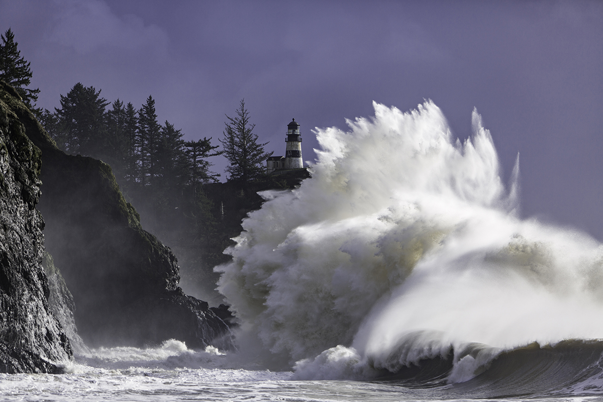

Washington Coast
The Washington coast is a rugged, tectonically active region formed by the Juan de Fuca plate subducting under North America, creating steep cliffs, sea stacks, and sandy beaches through earthquakes, uplift, and powerful wave erosion. Basalt and marine sedimentary rocks dominate the landscape. Overall, it makes for beautiful rugged and wild beaches. Like all of far west Washington, it remains quite wild and rural. Though in the south near Aberdeen down to Long Beach, the coast has tourist towns, everything North of there is either national park or indian reservation, and remains as intact wilderness. Stunning for its uniqueness: few stretches this large can claim the ruggedness and wildness of this beach.
More photos of this region
